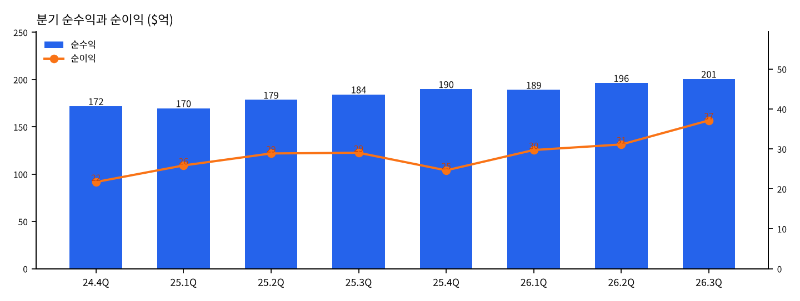
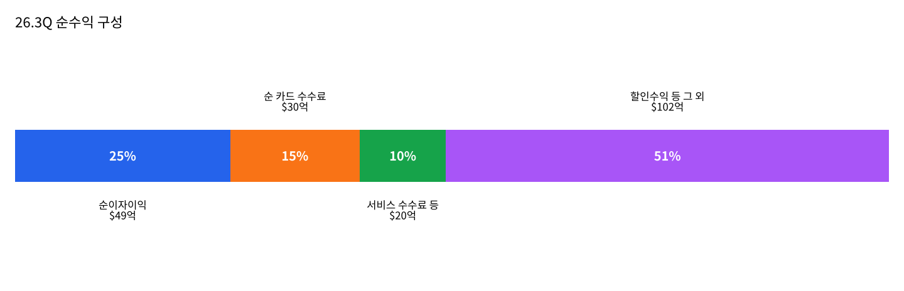
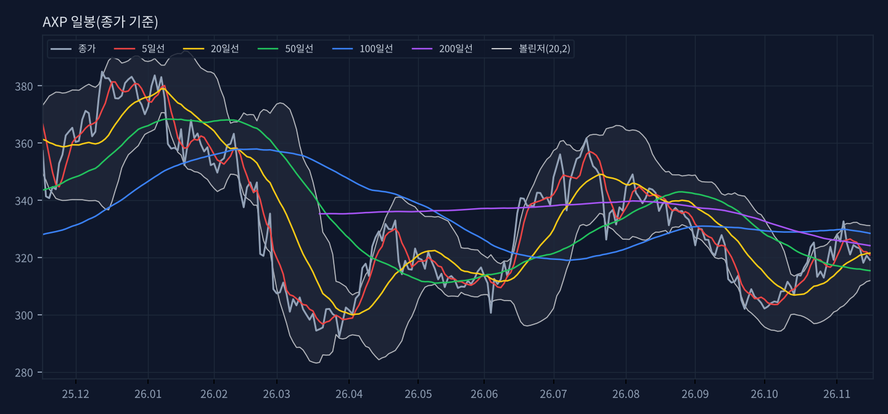
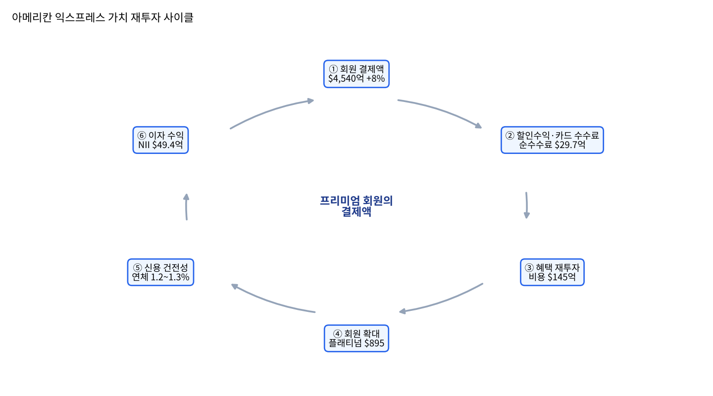

아메리칸 익스프레스는 카드를 발급하면서 결제망도 직접 운영하는 회사다. 고객이 카드를 쓸 때 가맹점에서 받는 할인수익(수익의 약 절반), 회원이 내는 연회비(순 카드 수수료 분기 $29.7억), 카드 대출 이자가 3대 수익이다. 플래티넘 카드 연회비가 $895인 프리미엄 고객층이 특징이다.
| 항목 | 내용 |
|---|---|
| 종목 | American Express Co. (AXP) · NYSE · 본사 뉴욕 |
| 밸류에이션 | PER 18.0배 · 배당수익률 1.15% (2026.11.16 종가 $319.05) |
| 최근 분기(26.3Q) | 순수익 $201억, 순이익 $37억, GAAP EPS $5.42, 조정 EPS $4.68 |
| 수익성 | ROE 35.7%, 실효세율 18.1%, 연체율 1.2~1.3% |
| 사업 | 카드 발급·결제망, 기업·소비자 카드, 여행·서비스 수수료 |
| 직책 | 인물 | 역할·특징 |
|---|---|---|
| 회장 겸 CEO | 스티븐 스퀴어리 | 프리미엄 카드 개편과 디지털 혜택 확대를 이끄는 경영자 |
| CFO | 크리스토프 르 카이예크 | 실적·가이던스 발표 담당 |
경영 스타일: 혜택에 먼저 쓰고 결제액으로 회수한다. 플래티넘 카드처럼 연회비를 올리는 대신 라운지·크레딧 혜택을 늘려 회원을 붙잡는다. 이번 3분기 비용 $145억은 1년 전($133억)보다 약 9% 늘었는데, 결제액(+8%)과 비슷한 속도다.
가맹점·회원을 직접 연결하는 폐쇄형 결제망이라 거래 데이터를 한 회사가 모두 가진다. 사기 탐지·혜택 개인화에 활용한다.
여행·식사·기업 지출 같은 고소득 고객의 지출을 카드 한 장에 모으고, 혜택 투자 → 결제액 증가 → 수수료 증가로 돌린다.
다음 실적발표는 세 가지 질문에 답하는 자리다.
1. 순 카드 수수료(연회비) 증가가 이어지나?
2. 결제액 성장 +8%와 FY26 순수익 +10% 가이던스가 지켜지나?
3. 신용·소송 비용이 안정적인가?
한 줄 판정 규칙: 첫 번째 질문(연회비)이 두 자릿수 증가를 이어가면 가장 중요한 수익 고리가 유지된다. 일회성 이익은 두 번째 질문으로 따로 걸러서 본다.
일정: 다음 실적발표는 트레이딩뷰 추정 2027.01.22(회사 확정 일정은 확인 필요). FY26 가이던스는 위에 적은 대로 제시돼 있다.
| 분기 | 순수익 | 순이자이익 | 비이자수익 | 비용 | 대손충당금 | 순이익 | EPS | 조정 EPS | 특이 사항 |
|---|---|---|---|---|---|---|---|---|---|
| 24.4Q | $172억* | $40억* | $131억* | $131억* | $13억* | $22억* | $3.04 | – | |
| 25.1Q | $170억 | $42억 | $128억 | $125억 | $12억 | $26억 | $3.64 | – | |
| 25.2Q | $179억 | $42억 | $137억 | $129억 | $14억 | $29억 | $4.08 | – | |
| 25.3Q | $184억 | $45억 | $139억 | $133억 | $13억 | $29억 | $4.14 | – | |
| 25.4Q | $190억* | $45억* | $145억* | $145억* | $14억* | $25억* | $3.53 | – | |
| 26.1Q | $189억 | $47억 | $142억 | $139억 | $13억 | $30억 | $4.28 | – | |
| 26.2Q | $196억 | $46억 | $150억 | $145억 | $11억 | $31억 | $4.53 | – | |
| 26.3Q | $201억 | $49억 | $151억 | $145억 | $10억 | $37억 | $5.42 | $4.68 | GBTG 지분 이익 $9.8억(주당 $1.11), 소송 충당 주당 $0.51 |
EPS는 희석 GAAP 주당순이익이다. 조정 EPS는 회사가 26.3Q에만 발표한 값($4.68, GBTG 지분 이익과 구조조정 등 제외)이며, 트레이딩뷰 Reported가 GAAP과 같아 나머지 분기는 –로 둔다. *는 연간 − 1~3분기 합으로 구한 근사치다.

흐름 요약: 순수익은 24.4Q $172억에서 26.3Q $201억으로 17% 늘었고 8개 분기 중 최대다. 순이익은 25.4Q $24.6억을 바닥으로 26.3Q $37억까지 올랐는데, 이 중 GBTG 지분 이익(세후 $7.5억)이 들어 있다. 순이자이익은 8분기 동안 $40억에서 $49억대로 꾸준히 늘었다.
| 구분 | 돈을 버는 방식 | 26.3Q | 비중 |
|---|---|---|---|
| 순이자이익 | 카드 대출 이자 − 조달 비용 | $49.4억 | 25% |
| 순 카드 수수료 | 회원 연회비 | $29.7억 | 15% |
| 서비스 수수료 등 | 여행·서비스·기타 수수료 | $19.8억 | 10% |
| 할인수익 등 그 외 비이자 | 가맹점 수수료(수익의 약 절반) 등 | 약 $101.7억(내 계산) | 51% |

비이자수익 $151억이 전체의 75%다. 이자에만 기대는 은행형 카드사와 다르게 결제 수수료가 중심이라 금리 변화에 덜 민감한 구조다. 세부 항목은 회사 발표 기준이며 "그 외" 항목은 차액으로 계산했다.
아멕스의 목적은 "프리미엄 회원의 지출을 가장 먼저 받는 카드"가 되는 것이다.
| 축 | 내용 |
|---|---|
| 프리미엄 회원 확대 | 연회비 높은 카드, 혜택 재투자 |
| 결제망 직영 | 가맹점 수수료와 데이터를 직접 확보 |
| 기업·중소기업 카드 | 기업 지출 비중 확대 |
| 신용 관리 | 연체율 1.2~1.3% 유지 |
| 주주 환원 | 배당(수익률 1.15%)과 자사주 |

| 이동평균 | 값 | 종가 대비 | 위치 |
|---|---|---|---|
| 5일선 | $320.88 | -0.6% | 종가 아래 |
| 20일선 | $321.49 | -0.8% | 종가 아래 |
| 50일선 | $315.36 | +1.2% | 종가 위 |
| 100일선 | $328.40 | -2.8% | 종가 아래 |
| 200일선 | $324.11 | -1.6% | 종가 아래 |
52주 고가 $387.5에서 52주 저가 $291.0 부근까지 내려온 뒤 최근 55일은 $297~344 범위에 있다. 종가 $319.05는 20·50일선($321.5·$315.4) 사이다.
| 규칙 | 기준 | 현재 값 | 신호 |
|---|---|---|---|
| 장기 추세 필터 | 종가 vs 200일선 | $319.10 < $324.11 | 매도 |
| 중장기 교차 | 50일선 vs 200일선 | $315.36 < $324.11 | 매도 |
| 단기 교차 | 20일선 vs 50일선 | $321.49 > $315.36 | 매수 |
| 돈키언 채널 | 55일 고가 $343.90 / 저가 $297.20 | 중간값 $320.55 아래 | 매도 |
| 1개월 모멘텀 | 21거래일 수익률 | +1.7% (기준 $313.60) | 매수 |
| 3개월 모멘텀 | 63거래일 수익률 | -5.8% (기준 $338.50) | 매도 |
| 6개월 모멘텀 | 126거래일 수익률 | +2.2% (기준 $312.20) | 매수 |
| 12개월 모멘텀 | 252거래일 수익률 | -12.5% (기준 $364.70) | 매도 |
| 종합 (8개 평균) | -0.25 | 매도 우위 |
해석: 매수 신호 3개(단기 교차, 1개월 모멘텀, 6개월 모멘텀), 매도 신호 5개(장기 추세 필터, 중장기 교차, 돈키언 채널, 3개월 모멘텀, 12개월 모멘텀). 합계 -0.25다. 14일 ATR $8.03 (2.5%), 52주 고가 $387.50 · 저가 $291.00.
| 가격 | 기준 | 무엇이 바뀌나 |
|---|---|---|
| $364.70 | 12개월 모멘텀 기준가 | 종가가 이 가격 위면 12개월 신호 매수 |
| $343.90 | 55일 고가 | 돌파 시 채널 상단 갱신 |
| $338.50 | 3개월 모멘텀 기준가 | 종가가 이 가격 위면 3개월 신호 매수 |
| $324.11 | 200일선 | 종가가 이 선 위/아래인지로 장기 추세 신호가 바뀜 |
| $320.55 | 돈키언 중간값 | 55일 채널 중간값 위/아래로 신호가 바뀜 |
| $313.60 | 1개월 모멘텀 기준가 | 종가가 이 가격 위면 1개월 신호 매수 |
| $312.20 | 6개월 모멘텀 기준가 | 종가가 이 가격 위면 6개월 신호 매수 |
| $297.20 | 55일 저가 | 이탈 시 채널 하단 갱신 |
가격 수준은 신호가 바뀌는 기준선일 뿐 진입·청산 가격 제안이 아니다. 20일/50일 교차는 이동평균 자체가 움직여 단일 가격으로 표시하지 않았다. 일봉·주봉은 종가 기준 직접 계산(고저 데이터 미사용)이다.
| 악재 요인 | 내용 | 강도 |
|---|---|---|
| 소송·규제 | OCC 과징금 관련 소송 충당 주당 $0.51을 3분기에 반영 | 중간 |
| 일회성 이익 의존 | GBTG 지분 이익(주당 $1.11)이 3분기 EPS에 포함 | 중간 |
| 혜택 비용 증가 | 3분기 비용 $145억(약 +9%)이 결제액 성장(+8%)과 비슷 | 중간 |
| 소비 경기 | 결제액 성장(+8%)이 소비에 연동. 연체율은 1.2~1.3%로 현재 낮음 | 참고 |
| 티커 | 회사 | PER(TTM) | PEG | P/S | EPS 성장(YoY) |
|---|---|---|---|---|---|
| AXP | 아메리칸 익스프레스 | 18.0배 | 0.94 | 2.50배 | +19% |
| V | 비자 | 34.9배 | 1.66 | 17.46배 | +21% |
| MA | 마스터카드 | 34.6배 | 1.55 | 15.95배 | +22% |
| COF | 캐피털원 | 11.4배 | 0.02 | 1.89배 | +618% |
| SYF | 신크로니 | 7.5배 | 1.63 | 1.23배 | +5% |
비교 결론: AXP의 PER 18.0배는 결제망 회사 V·MA(약 35배)의 절반이고, 카드 발급사 COF·SYF(7.5~11.4배)보다 높다. 결제망과 발급을 함께 하는 중간 구조라 위치도 중간이다. 단 표시 PEG 0.94는 GBTG 이익으로 EPS가 부풀려져 있어 비교에 주의가 필요하다.
AXP는 적자 기업이 아니다(최근 4분기 순이익 $123억). 은행형 구조라 런웨이 대신 수익성과 결제액을 본다.
| 지표 | 값 | 의미 |
|---|---|---|
| ROE | 35.7% | 자기자본 대비 이익이 매우 높음 |
| 총 결제액(billed business) | $4,540억 (+8%) | 할인수익의 원천 |
| 순 카드 수수료 | $29.7억 (+16~17%) | 연회비 증가 |
| 연체율 | 1.2~1.3% | 신용 건전성 양호 |
| 실효세율 | 18.1% | 3분기 기준 |
| 기준 | 매출 | P/S | 비고 |
|---|---|---|---|
| 트레이딩뷰 | – | 2.50배 | 순수익 기준 |
| 결제망 회사(V·MA) | – | 약 16.7배 | 17.46 / 15.95 |
| 카드 발급사(COF·SYF) | – | 약 1.56배 | 1.89 / 1.23 |
해석: AXP의 P/S 2.50배는 결제망 회사의 약 1/7, 카드 발급사의 약 1.6배다. 매출에 대출 이자와 연회비가 많이 섞여 있어 네트워크 전문사와 직접 비교하기 어렵다.
은행형 구조라 EBITDA 대신 충당금 전 영업이익(PPNR)을 쓴다. 세전이익과 충당금의 합이다.
| 지표 | 값 | 산출 |
|---|---|---|
| 순이익 (TTM) | $123억 | 25.4Q~26.3Q 합 |
| 세전이익 (TTM) | $155억 | SEC 합계(GBTG 이익 포함) |
| 대손충당금 (TTM) | $47억 | SEC 합계 |
| PPNR (TTM) | 약 $202억 — 흑자 | 세전이익 + 충당금 |
| 영업현금흐름 − 설비투자 (TTM) | 약 $139억 | $176억 − $37억 |
| 방식 | PER | EPS 성장률 | PEG | 판정 |
|---|---|---|---|---|
| GBTG 이익 제외 (추정, TTM 조정 EPS 약 $17.02) | 약 18.8배 | 약 +14.3% | 약 1.31 | 기준 초과 |
| 트레이딩뷰 (GAAP TTM $17.76) | 18.0배 | +19.2% | 0.94 | 일회성 이익 포함 |
판정: GBTG 이익 제외 PEG 약 1.31 → 기준 초과. 표시 PEG 0.94는 일회성 이익 포함 값이다. GBTG 지분 이익(세후 $7.5억, 주당 $1.11)이 GAAP TTM EPS $17.76을 높이고 성장률도 부풀린다. 일회성 항목을 제외한 TTM EPS를 약 $17.02, 성장률을 약 14.3%로 잡으면 PER 18.75배 ÷ 14.3 = 1.31이다(내 추정, 일부 가정 포함).

아멕스 사이클은 결제액 → 수수료 → 혜택 재투자 → 회원 확대로 돈다.
| 고리 | 현재 숫자 | 고리 강도 | 약해지는 신호 |
|---|---|---|---|
| ① 회원 결제액 | 총 결제액 $4,540억 (+8%) | 강함 | 결제액 증가율 둔화 |
| ② 할인수익·카드 수수료 | 순 카드 수수료 $29.7억 (+16~17%) | 강함 | 연회비 증가 둔화 |
| ③ 혜택 재투자 | 비용 $145억(약 +9%) | 진행 중 | 비용 증가 > 수익 증가 |
| ④ 회원 확대 | 플래티넘 $895 개편 | 진행 중 | 신규 가입 둔화 |
| ⑤ 신용 건전성 | 연체율 1.2~1.3%, 충당금 $9.9억 | 강함 | 연체율 상승 |
| ⑥ 이자 수익 | 순이자이익 $49.4억(+10%) | 강함 | 금리 하락, 신용 악화 |
사이클의 특징: 약한 고리는 ③이다. 혜택에 쓰는 비용이 결제액·수수료보다 빨리 늘면 사이클의 수익이 줄어든다.